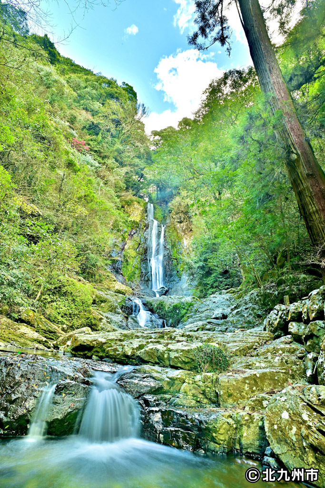

メインコンテンツへスキップ
北九州市生物多様性戦略 2025–2030
お知らせ
アーバンネイチャー北九州とは？
全体像
生物多様性とは？
北九州市の取組
活動拠点
北九州市の自然スポット
ネットワーク
北九州ネイチャーポジティブネットワーク
企業参加型プロジェクト
活動紹介
ネイチャーポジティブ実践事例
企業の活動ブログ
団体等の活動ブログ
イベントを探す
みんなの写真展
お問合せ
お知らせ
アーバンネイチャー北九州とは？
全体像
生物多様性とは？
北九州市の取組
北九州市の自然スポット
活動拠点
ネットワーク
北九州ネイチャーポジティブネットワーク
企業参加型プロジェクト
活動紹介
ネイチャーポジティブ実践事例
企業の活動ブログ
団体等の活動ブログ
イベントを探す
みんなの写真展
お問合せ
参加する
トップ
みんなの写真展
みんなの写真展
北九州市の自然写真を無料でご利用いただけます
写真アーカイブです。無料素材としてお使いいただけます。
ご利用について：
当サイトの写真素材を利用する場合は、
コチラ
の事項に同意していただく必要がございます。 同意いただけない場合は利用できませんのでご注意ください。
海・干潟・ビオトープ
山
川
動物
植物
街と自然
農産品
昆虫・その他

コンテスト作品
お気軽にお問合せください
お問合せ